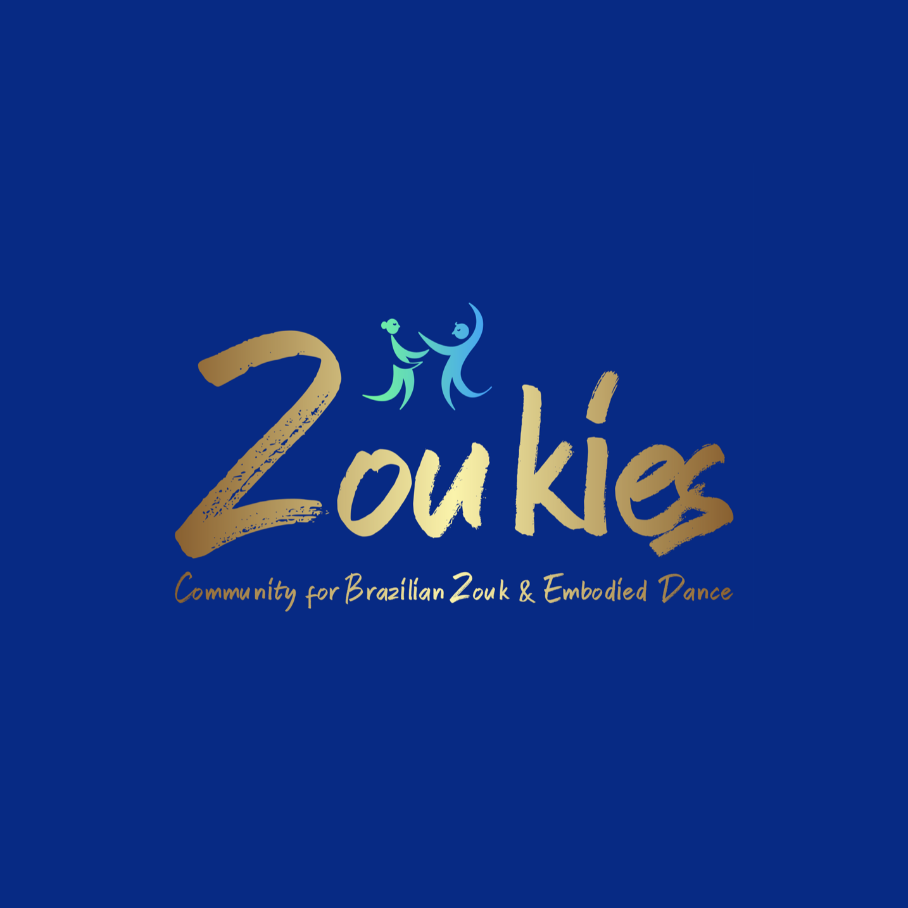
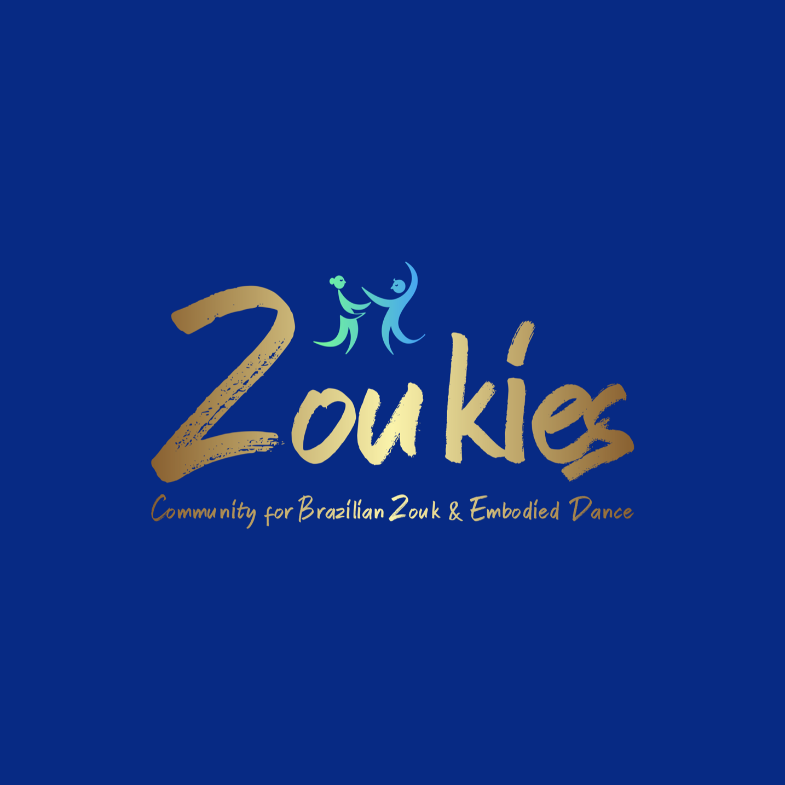

Announcement group
Announcement group
parties. .ch
April
.ch
April


📅 *Upcoming parties in April* 🌠*Genève* • Zoukalicious - From A to Zouk (Sun, Apr 21) 🌠*Zürich* • Zouk Prime (Sat, Apr 20) • Fiesta Bachata with Zouk (Fri, Apr 26) • Zouk Affair (Sun, Apr 28) • Lambada practica (Mondays) • DanceZouk Practica (Mondays and Thursdays) Up to date calendar: http://parties.swisszouk.ch(Also send to Nadege)
Please take a look if everything is correct; as usual, I kindly ask the hosts of repeated events (@Eric Fehr, @Dani Costa) to click through to the page and see if all the dates are correct. Please react with a 👍if your events look OK. If not, please send me updates until the end of the week 🙠There is an email template you can use at http://parties.swisszouk.ch/about.html . Thank you!
parties..ch
May

 

📅 *Upcoming parties in May* 🌠*Basel* • Friday Social with Crash Course (Fri, May 10) • Zouk Quicksatarter (Wed, May 22) 🌠*Zürich* • Lamba Night (Sun, May 12) • Zouk Prime (Sat, May 18) • Fiesta Bachata with Zouk (Fri, May 24) • Zouk Affair (Sun, May 26) • Lambada practica (Mondays) • DanceZouk Practica (Mondays and Thursdays) Up to date calendar: http://parties.swisszouk.ch(Also send to Nadege)
Please take a look if everything is correct; as usual, I kindly ask the hosts of repeated events (@Eric Fehr, @Dani Costa) to click through to the page and see if all the dates are correct. Please react with a 👍if your events look OK. If not, please send me updates until the end of the week 🙠There is an email template you can use at http://parties.swisszouk.ch/about.html . Thank you!
parties..ch
June
📅 *Upcoming parties in June* 🌠*Basel* • Friday Social with Crash Course (Fri, Jun 7) • Zouk Quicksatarter (Mon, Jun 17) 🌠*Zürich* • Zouk Prime (Sat, Jun 29) • Lambada practica (Mondays) • DanceZouk Practica (Mondays and Thursdays) Up to date calendar: http://parties.swisszouk.ch(Also send to Nadege)
Please take a look if everything is correct; as usual, I kindly ask the hosts of repeated events (@Eric Fehr, @Dani Costa) to click through to the page and see if all the dates are correct. Please react with a 👍if your events look OK. If not, please send me updates until the end of the week 🙠There is an email template you can use at http://parties.swisszouk.ch/about.html . Thank you!
parties..ch
July
📅 *Upcoming parties in July* 🌠*Zürich* • Zouk Prime (Sat, Jul 20) • DanceZouk Practica (Mondays and Thursdays) • Lambada practica (Mondays) Up to date calendar: http://parties.swisszouk.ch(Also send to Nadege)
Please take a look if everything is correct; as usual, I kindly ask the hosts of repeated events (@Eric Fehr, @Dani Costa) to click through to the page and see if all the dates are correct. Please react with a 👍if your events look OK. If not, please send me updates until the end of the week 🙠There is an email template you can use at http://parties.swisszouk.ch/about.html . Thank you!
We list Zouk events in Switzerland. This is a calendar of zouk dancing socials in Zürich, Basel and Genève. All your zouk events listed in a single place.
About · Learn zouk